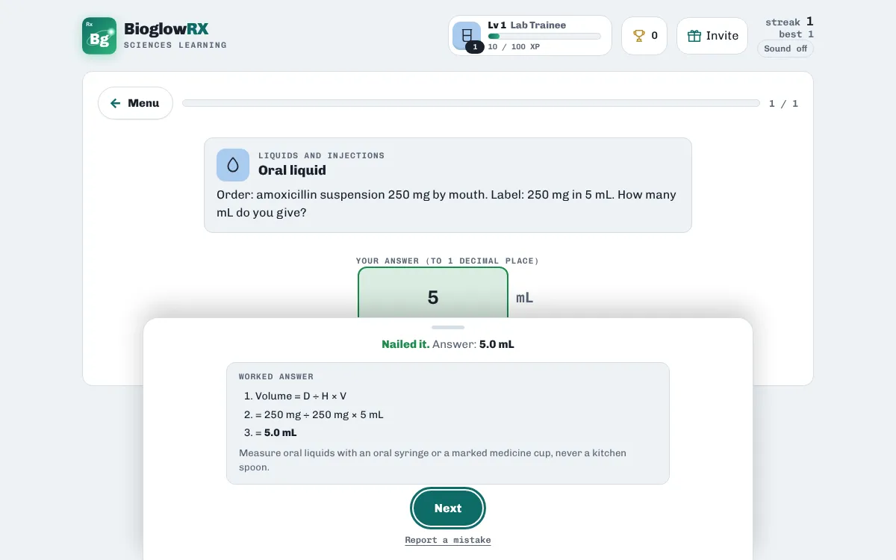
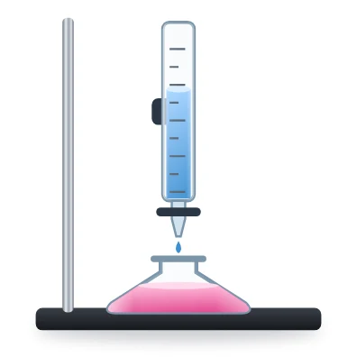
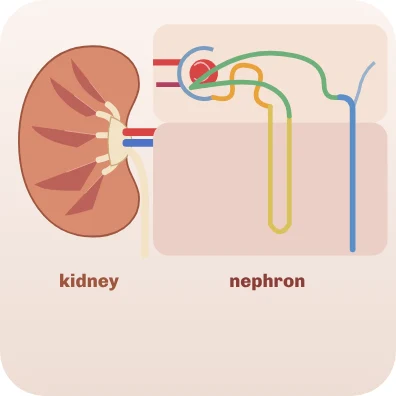

Pharmacology · free · no login
Free dosage calculation practice

Dosage calculations come down to a handful of formulas: tablets (D ÷ H), liquids (D ÷ H × V), unit conversions, weight-based doses, pump rates in mL/h and drip rates in drops per minute. The hard part is applying them quickly and without slips.

Dose Calc gives you new numbers every round, accepts your typed answer, and shows the full worked method after every question. If your answer is out by 10, 100 or 1,000 it tells you to check the decimal point or the unit conversion, the two most common mistakes.
A taste of what's inside
| What it works out | Formula | Example |
|---|---|---|
| Tablets to give | D ÷ H | The order is 500 mg and each tablet contains 250 mg. |
| Volume to give | D ÷ H × V | The order is 40 mg and the vial contains 10 mg in 1 mL. |
| Grams, milligrams, micrograms | 1 g = 1,000 mg = 1,000,000 mcg | The order is in grams but the stock is labelled in milligrams. |
| Litres to millilitres | 1 L = 1,000 mL | A bag holds 1.5 L and you need the volume in mL for the pump. |
| Pounds to kilograms | kg = lb ÷ 2.2 | The child's weight is given in pounds but the dose is in mg per kg. |
| Dose by weight | dose = mg/kg × kg | The order is 15 mg/kg and the child weighs 12 kg. |
| Daily dose split into doses | per dose = (mg/kg/day × kg) ÷ doses a day | The order is 30 mg/kg/day given in 3 divided doses. |
| Pump rate | mL/h = total mL ÷ hours | Infuse 1,000 mL over 8 hours on a pump. |
| Rate from a dose per hour | mL/h = (units/h) ÷ (units/mL) | Heparin is ordered at 1,000 units per hour; the bag has 50 units/mL. |
| Drops per minute | gtt/min = mL × drop factor ÷ minutes | No pump: 1,000 mL over 8 hours through a 15 gtt/mL giving set. |
Ways to practise
- Study notes · Read the key ideas first: everything the games ask is in here.
- Explore the formulas · Each formula with a worked example.
- Learn the method · Mixed questions with the formula shown and a "Show me how" helper.
- Tablets and liquids · D ÷ H and D ÷ H × V, with unit conversions.
- Weight-based doses · mg/kg, pounds to kg, and doses split through the day.
- IV rates and drips · Pump rates in mL/h, drops per minute and time to finish.
- Challenge round · 10 mixed questions, no formula, no helper.
- Which formula? · Read the situation, pick the formula.
- Match Pairs · Pair each calculation with its formula.
How to study with it
- Start with Learn the method: the "Show me how" button walks you through each step.
- Move on to Tablets and liquids, Weight-based doses and IV rates and drips one at a time.
- Finish with the Challenge round: 10 mixed problems. Aim for 70% or more to pass.
Questions
Which formula does it use for liquids?
Desired dose ÷ dose on hand × volume (D ÷ H × V), after converting both doses to the same unit.
Is it safe to use for real patients?
No. It is practice for students. Always follow your programme's teaching and local policy for real medication.
Is it free?
Yes. Everything is free, with no ads and nothing to buy.
Do I need an account?
No. There is no login. Your scores, streaks and certificates are saved on your device.
Does it work on a phone?
Yes. It works in any modern browser on phones, tablets, Chromebooks and computers.
More free practice

ChemistryVirtual titration labPour, swirl and stop at the pink endpointPlay free PharmacologyNursing pharmacology: drug classes quiz25 common medicines: class, system and usePlay free
PharmacologyNursing pharmacology: drug classes quiz25 common medicines: class, system and usePlay free 
Anatomy & PhysiologyABG practice: blood gas casesRead pH, CO₂ and bicarbonate in patient casesPlay freeBioglowRX Sciences Learning turns university science textbooks into free games, chapter by chapter: chemistry, anatomy & physiology, pharmacology, nutrition, and health & wellness. See all subjects.